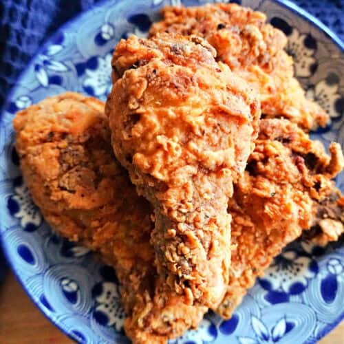

Home
Fried Chicken Recipe

Fried chicken is a beloved, globally popular dish consisting of chicken pieces coated in seasoned flour or batter and cooked until golden-brown and crispy.
Fried chicken requires a soak in a seasoned buttermilk or milk brine to ensure tender meat, followed by a double dredge in a flour-cornstarch mixture for that signature crunchy crust. Fried in hot oil until golden brown
Ingredients
main:
Breading:
- 2 teaspoon Garlic Powder
- 1 teaspoon Onion Powder
- 1/8 teaspoon Baking Powder
- 2 tablespoon Cornstarch
- 10 tablespoon All-purpose Flour
Marinade:
- 16 grams Maggi Magic Sarap
- 3 pieces Calamansi
- 1/4 Soy Sauce
- 1/2 teaspoon Ground Black Pepper
- 1 teaspoon Paprika
Steps
- Combine the marinade ingredients in a bowl. Mix well.
- Put the chicken in a resealable bag. Pour-in the marinade mixture. Let all the air out of the bag, seal it, and then place inside the refrigerator. Marinate for at least 1 hour.
- Combine the breading ingredients in a bowl. Mix well.
- Dredge the marinated chicken in the breading mixture. Shake off the excess and place the chicken on a plate.
- Meanwhile, heat the cooking oil in a wok until it reaches 300 F.
- Deep fry the chicken for 25 minutes while turning the chicken over in the middle of the process.
- Remove the Filipino fried chicken from the wok. Place it over a wire rack to cool down. Transfer to a serving plate and enjoy!